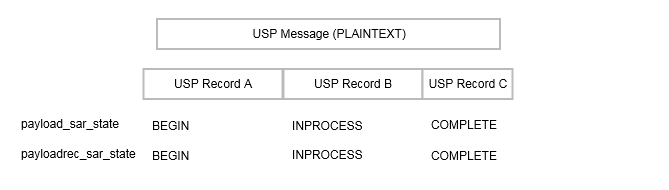

6 End to End Message Exchange 
USP Messages are exchanged between Controllers and Agents. In some deployment scenarios, the Controller and Agent have a direct connection. In other deployment scenarios, the messages exchanged by the Controller and Agent traverse multiple intermediate MTP Proxies. The latter deployment scenario typically occurs when the Agent or Controller is deployed outside the proximal or Local Area Network. In both types of scenarios, the End-to-End (E2E) message exchange capabilities of USP permit the:
- Exchange of USP Records within an E2E Session Context that allows for:
- Integrity protection for non-payload fields
- Protected and unprotected payloads
- Segmentation and reassembly of E2E Messages that would be too large to transfer through the intermediate MTP Proxies.
- Exchange of USP Records without an E2E Session Context that allows for:
- Integrity protection for non-payload fields
- Unprotected payloads or protected payloads where the payload protection security mechanism doesn’t require a concept of a session (e.g., COSE)
Protected payloads provide a secure message exchange (confidentiality, integrity and identity authentication) through exchange of USP Messages that are secured by the originating and receiving USP Endpoints.
USP makes use of USP Records to exchange USP Messages between Endpoints, see Record Definition for a description of the USP Record fields.
R-E2E.1 - A receiving USP Endpoint MUST ignore any Record that does not contain its own Endpoint Identifier as the to_id field of the Record.
R-E2E.2 – A USP Record with record_type = session_context MUST contain at least one payload field, or a non-zero retransmit_id. (DEPRECATED)
Note: the R-E2E.2 requirement was deprecated in USP 1.2, because sending a Session Context Record without a payload is useful for restarting a Session Context
Note: the requirements below reference Objects and Parameters used to manage the E2E Session. These are specified in the Device:2 Data Model [38].
Note: The USP Record Encapsulation section was moved to USP Record Encapsulation in USP 1.2.
6.1 Exchange of USP Records within an E2E Session Context
When exchanging USP Records within an E2E Session Context, record_type of session_context is used, and all required parameters for record_type of session_context are supplied.
6.1.1 Establishing an E2E Session Context
For the exchange of USP Records within an E2E Session Context to happen between two USP Endpoints, an E2E Session Context (Session Context) is established between the participating USP Endpoints. The Session Context is uniquely identified within the USP Endpoint by the combination of the Session Identifier and remote USP Endpoint’s Identifier.
In USP, either a Controller or an Agent can begin the process of establishing a Session Context. This is done by the Controller or Agent sending a USP Record with a session_id field that is not currently associated with the Agent/Controller combination and a sequence_id field value of 1. Note that a Record with an empty payload can be used to establish a new Session Context.
R-E2E.3 – Session Context identifiers MUST be generated by the USP Endpoint that originates the session such that it is greater than 1 and scoped to the remote USP Endpoint.
When a Session Context had been previously established between an Agent and Controller and the remote USP Endpoint receives a USP Record with a different session_id field, the remote USP Endpoint will restart the Session Context using the new session_id field.
R-E2E.4 – When a USP Endpoint receives a USP Record from another USP Endpoint where there is no established Session Context, and the USP Record includes a Session Context identifier, and the USP Endpoint is configured to allow Session Context to be used with the other Endpoint, the USP Endpoint MUST start a new Session Context for the remote USP Endpoint, and initialize the sequence_id field to 1.
R-E2E.5 – At most one (1) Session Context is established between an Agent and Controller.
R-E2E.6 – When a USP Endpoint receives a USP Record from a remote USP Endpoint with a different Session Context identifier than was previously established, the USP Endpoint MUST start a new Session Context for the remote USP Endpoint, and initialize the sequence_id field to 1.
Note: Implementations need to consider if outstanding USP Messages that have not been transmitted to the remote USP Endpoint need to be transmitted within the newly established Session Context.
R-E2E.6a – When an Agent is configured not to allow Session Context or does not support Session Context and receives a USP Record initiating Session Context, the Agent MUST reply with a Disconnect Record and MUST include reason_code and reason fields indicating Session Context is not allowed (code 7106 from USP Record Errors).
When a Controller is configured to require Session Context and receives a Disconnect Record indicating Session Context is not allowed or supported by the Agent, the Controller is expected to terminate the MTP session.
R-E2E.6b – If an Agent needs to terminate a Session Context without terminating an existing MTP connection where Session Context is being used, it MUST send a Disconnect Record and MUST include reason_code and reason indicating Session Context is being terminated (code 7105 from USP Record Errors).
6.1.1.1 Session Context Expiration
Sessions Contexts have a lifetime and can expire. The expiration of the Session Context is handled by the Device.LocalAgent.Controller.{i}.E2ESession.SessionExpiration Parameter in the Agent. If the Agent does not see activity (an exchange of USP Records) within the Session Context, the Agent considers the Session Context expired and for the next interaction with the Controller a new Session Context is established.
R-E2E.7 – When a Session Context between a Controller or Agent expires the Agent MUST initiate a new Session Context upon the next interaction with the remote USP Endpoint or from a Session Context request by the remote USP Endpoint.
6.1.1.2 Exhaustion of Sequence Identifiers
USP Endpoints identify the USP Record using the sequence_id field. When the sequence_id field for a USP Record that is received or transmitted by a USP Endpoint nears the maximum value that can be handled by the USP Endpoint, the USP Endpoint will attempt to establish a new Session Context in order to avoid a rollover of the sequence_id field.
R-E2E.8 – When a USP Endpoint receives a USP Record with a value of the sequence_id field that is within 10,000 of the maximum size for the data type of the sequence_id field, the USP Endpoint MUST establish a new Session Context with the remote USP Endpoint.
R-E2E.9 – When a USP Endpoint transmits a USP Record with a value of the sequence_id field that is within 10,000 of the maximum size for the data type of the sequence_id field, the USP Endpoint MUST establish a new Session Context with the remote USP Endpoint upon its next contact with the remote USP Endpoint.
6.1.1.3 Failure Handling in the Session Context
In some situations, (e.g., TLS negotiation handshake) the failure to handle a received USP Record is persistent, causing an infinite cycle of “receive failure/request->session/establish->session/receive->failure” to occur. In these situations, the Agent enforces a policy as defined in this section regarding establishment of failed Session Contexts or failed interactions within a Session Context. The policy is controlled by the Device.LocalAgent.Controller.{i}.E2ESession.Enable Parameter.
R-E2E.10 – When retrying USP Records, the Agent MUST use the following retry algorithm to manage the retransmission Session Context establishment procedure:
The retry interval range is controlled by two Parameters, the minimum wait interval and the interval multiplier, each of which corresponds to a data model Parameter, and which are described in the table below. The factory default values of these Parameters MUST be the default values listed in the Default column. They MAY be changed by a Controller with the appropriate permissions at any time.
| Descriptive Name | Symbol | Default | Data Model Parameter Name |
|---|---|---|---|
| Minimum wait interval | m | 5 seconds | Device.LocalAgent.Controller.{i}.E2ESession.SessionRetryMinimumWaitInterval |
| Interval multiplier | k | 2000 | Device.LocalAgent.Controller.{i}.E2ESession.SessionRetryIntervalMultiplier |
| Retry Count | Default Wait Interval Range (min-max seconds) | Actual Wait Interval Range (min-max seconds) |
|---|---|---|
| #1 | 5-10 | m - m.(k/1000) |
| #2 | 10-20 | m.(k/1000) - m.(k/1000)^2 |
| #3 | 20-40 | m.(k/1000)^2 - m.(k/1000)^3 |
| #4 | 40-80 | m.(k/1000)^3 - m.(k/1000)^4 |
| #5 | 80-160 | m.(k/1000)^4 - m.(k/1000)^5 |
| #6 | 160-320 | m.(k/1000)^5 - m.(k/1000)^6 |
| #7 | 320-640 | m.(k/1000)^6 - m.(k/1000)^7 |
| #8 | 640-1280 | m.(k/1000)^7 - m.(k/1000)^8 |
| #9 | 1280-2560 | m.(k/1000)^8 - m.(k/1000)^9 |
| #10 and subsequent | 2560-5120 | m.(k/1000)^9 - m.(k/1000)^10 |
R-E2E.11 - Beginning with the tenth retry attempt, the Agent MUST choose from the fixed maximum range. The Agent will continue to retry a failed session establishment until a USP Message is successfully received by the Agent or until the SessionExpiration time is reached.
R-E2E.12 – Once a USP Record is successfully received, the Agent MUST reset the Session Context retry count to zero for the next Session Context establishment.
R-E2E.13 – If a reboot of the Agent occurs, the Agent MUST reset the Session Context retry count to zero for the next Session Context establishment.
6.1.2 USP Record Exchange
Once a Session Context is established, USP Records are created to exchange payloads in the Session Context. USP Records are uniquely identified by their originating USP Endpoint Identifier (from_id), Session Context identifier (session_id) and USP Record sequence identifier (sequence_id).
6.1.2.1 USP Record Transmission
When an originating USP Endpoint transmits a USP Record, it creates the USP Record with a monotonically increasing sequence identifier (sequence_id).
R-E2E.14 – When an originating USP Endpoint transmits a USP Record, it MUST set the sequence identifier of the first transmitted USP Record in the Session Context to 1.
R-E2E.15 – When an originating USP Endpoint transmits additional USP Records, the originating USP Endpoint MUST monotonically increase the sequence identifier from the last transmitted USP Record in the Session Context by one (1).
To communicate the sequence identifier of the last USP Record received by a receiving USP Endpoint to the originating USP Endpoint, whenever a USP Endpoint transmits a USP Record the originating USP Endpoint communicates the next sequence identifier of a USP Record it expects to receive in the expected_id field. The receiving USP Endpoint uses this information to maintain its buffer of outgoing (transmitted) USP Records such that any USP Records with a sequence identifier less than the expected_id can be removed from the receiving USP Endpoints buffer of transmitted USP Records for this Session Context.
R-E2E.16 – When an originating USP Endpoint transmits a USP Record, the originating USP Endpoint MUST preserve it in an outgoing buffer, for fulfilling retransmit requests, until the originating USP Endpoint receives a USP Record from the receiving USP Endpoint with a greater expected_id.
R-E2E.17 – When an originating USP Endpoint transmits a USP Record, the originating USP Endpoint MUST inform the receiving USP Endpoint of the next sequence identifier in the Session Context for a USP Record it expects to receive.
6.1.2.2 Payload Security within the Session Context
The value of the payload_security field defines the type of payload security that is performed in the Session Context. Once a Session Context is established the payload security stays the same throughout the lifetime of the Session Context.
R-E2E.18 – The originating USP Endpoint MUST use the same value in the payload_security field for all USP Records within a Session Context.
6.1.2.3 USP Record Reception
USP Records received by a USP Endpoint have information that is used by the receiving USP Endpoint to process:
- The payload contained within the USP Record,
- A request to retransmit a USP Record, and
- The contents of the outgoing buffer to clear the USP Records that the originating USP Endpoint has indicated it has received from the receiving USP Endpoint.
As USP Records can be received out of order or not at all, the receiving USP Endpoint only begins to process a USP Record when the sequence_id field of the USP Record in the Session Context is the sequence_id field that the receiving USP Endpoint expects to receive. The following figure depicts the high-level processing for USP Endpoints that receive a USP Record.
R-E2E.19 – The receiving USP Endpoint MUST ensure that the value in the payload_security field for all USP Records within a Session Context is the same and fail the USP Record if the value of the payload_security field is different.
R-E2E.20 – Incoming USP Records MUST be processed per the following rules:
- If the USP Record contains a
sequence_idfield larger than the nextexpected_idvalue, the USP Record is added to an incoming buffer of unprocessed USP Records. - If the
sequence_idis less that the nextexpected_id, the Endpoint MUST gracefully ignore the USP Record. - If the
sequence_idmatches theexpected_id, for the USP Record and any sequential USP Records in the incoming buffer:- If the payload is not empty, it is passed to the implementation for processing based on the type of payload in the
payload_securityfield and if the payload requires reassembly according to the values of thepayload_sar_stateandpayloadrec_sar_statefields. - If a
retransmit_idfield is non-zero, the USP Record with the sequence identifier of theretransmit_idfield is resent from the outgoing buffer.
- If the payload is not empty, it is passed to the implementation for processing based on the type of payload in the
- The
expected_idfield for new outgoing Records is set tosequence_idfield + 1 of this USP Record.
6.1.2.3.1 Failure Handling of Received USP Records Within a Session Context
When a receiving USP Endpoint fails to either buffer or successfully process a USP Record, the receiving USP Endpoint initiates a new Session Context.
R-E2E.21 – When a USP Endpoint that receives a USP Record within a Session Context that fails to buffer or successfully process (e.g., decode, decrypt, retransmit) the USP Endpoint MUST start a new Session Context.
6.1.2.4 USP Record Retransmission
An Agent or Controller can request to receive USP Records that it deems as missing at any time within the Session Context. The originating USP Endpoint requests a USP Record from the receiving USP Endpoint by placing the sequence identifier of the requested USP Record in the retransmit_id field of the USP Record to be transmitted.
The receiving USP Endpoint will determine if USP Record exists and then re-send the USP Record to the originating USP Endpoint.
If the USP Record doesn’t exist, the USP Endpoint that received the USP Record will consider the USP Record as failed and perform the failure processing as defined in section Failure Handling of Received USP Records.
To guard against excessive requests to retransmit a specific USP Record, the USP Endpoint checks to see if the number of times the USP Record has been retransmitted is greater than or equal to maximum times a USP Record can be retransmitted as defined in the Device.LocalAgent.Controller.{i}.E2ESession.MaxRetransmitTries Parameter. If this condition is met, then the USP Endpoint that received the USP Record with the retransmit request will consider the USP Record as failed and perform the failure processing as defined in section Failure Handling of Received USP Records.
6.1.3 Guidelines for Handling Session Context Restarts
A Session Context can be restarted for a number of reasons (e.g., sequence id exhaustion, errors, manual request). When a Session Context is restarted, the USP Endpoints could have USP Records that have not been transmitted, received or processed. This section provides guidance for USP Endpoints when the Session Context is restarted.
The originating Endpoint is responsible for determining the policy for recovering from USP Records that were not transmitted. For example, the policy could be to resend the USP Message conveyed through the USP Record, or to simply discard the USP Message.
R-E2E.22 – The receiving USP Endpoint MUST successfully process the USP Record through the expected_id field that it last transmitted in the previous session.
When a USP Endpoint receives a USP Record that cannot pass an integrity check or that has an incorrect value in the session_id element, the Session Context is restarted.
R-E2E.23 – USP Records that do not pass integrity checks MUST be silently ignored and the receiving USP Endpoint MUST restart the Session Context.
This allows keys to be distributed and enabled under the old session keys and then request a session restarted under the new keys.
R-E2E.24 – USP Records that pass the integrity check but have an invalid value in the session_id field MUST be silently ignored and the receiving USP Endpoint MUST restart the Session Context.
6.1.4 Segmented Message Exchange
Since USP can use different types of MTPs, some MTPs place a constraint on the size of the USP Message that it can transport. To handle this, USP has a Segmentation and Reassembly function. When this Segmentation and Reassembly function is performed by Controller and Agent, it removes the possibly that the message may be blocked (and typically) dropped by the intermediate transport servers. A Segmentation and Reassembly example is shown in the figure below where the ACS Controller segments the USP Message within the USP Record into segments of 64K bytes because the STOMP MTP Endpoint (in this example) can only handle messages up to 64K bytes.
While the sequence_id field identifies the USP Record sequence identifier within the context of a Session Context and the retransmit_id field provides a means of a receiving USP Endpoint to indicate to the transmitting USP Endpoint that it needs a specific USP Record to ensure information fields are processed in a first-in-first-out (FIFO) manner, the Segmentation and Reassembly function allows multiple payloads to be segmented by the transmitting USP Endpoint and reassembled by the receiving USP Endpoint by augmenting the USP Record with additional information fields without changing the current semantics of the USP Record’s field definitions. This is done using the payload_sar_state and payloadrec_sar_state fields in the USP Record to indicate status of the segmentation and reassembly procedure. This status along with the existing sequence_id, expected_id and retransmit_id fields and the foreknowledge of the E2E maximum transmission unit MaxUSPRecordSize Parameter in the Agent’s Controller table provide the information needed for two USP Endpoints to perform segmentation and reassembly of payloads conveyed by USP Records. In doing so, the constraint imposed by MTP Endpoints (that could be intermediate MTP Endpoints) that do not have segmentation and reassembly capabilities are alleviated. USP Records of any size can now be conveyed across any USP MTP Endpoint as depicted below:

Note: the 64k size limit is not inherent to the STOMP protocol. It is merely provided here as an example.
6.1.4.1 SAR function algorithm
The following algorithm is used to provide the SAR function.
6.1.4.1.1 Originating USP Endpoint
For each USP Message segment the Payload:
- Compose the USP Message.
- If
payload_securityisTLS12, encrypt the USP Message. TLS will segment the encrypted Message per the maximum allowed TLS record size.- If all TLS records + Record header elements are less than the maximum allowed USP Record size, then a single USP Record is sent.
- Otherwise segmentation of the USP Record will need to be done.
- If the record size of a single TLS record + USP Record header elements is less than the maximum allowed USP Record size, exactly one TLS record can be included in a USP Record.
- If the TLS record size + Record header elements is greater than the maximum allowed USP Record size, the TLS record is segmented across multiple USP Records.
- If the Message is transmitted using
PLAINTEXTand the Message + Record header elements are greater than the maximum allowed USP Record size, the USP Record is segmented. - Set the
payload_sar_statefield for each transmitted Record.- If there is only one Record,
payload_sar_state=NONE (0). - If there is more than one USP Record, the
payload_sar_statefield is set toBEGIN (1)on the first Record,COMPLETE (3)on the last Record, andINPROCESS (2)on all Records between the two.
- If there is only one Record,
- Set the
payloadrec_sar_statefield for each transmitted Record.- If there is only one Record or one Secure Message Exchange TLS record per USP Record,
payloadrec_sar_state=NONE (0). - If Secure Message Exchange TLS records or a
PLAINTEXTpayload are segmented across multiple USP Records,payloadrec_sar_state=BEGIN (1)on a Record that contains the initial segment of a TLS record orPLAINTEXTpayload,COMPLETE (3)on a Record that contains the final segment of a TLS record orPLAINTEXTpayload, andINPROCESS (2)on all Records containing segments between initial and final segments of a TLS record orPLAINTEXTpayload.
- If there is only one Record or one Secure Message Exchange TLS record per USP Record,
- Each Record is sent (within a Session Context) using the procedures defined in the USP Record Message Exchange section above.
The effect of the above rules for PLAINTEXT payloads or for Secure Message Exchange with a single TLS record is that payloadrec_sar_state will be the same as payload_sar_state for all Records used to communicate the USP Message.
Note: The maximum allowed USP Record size can be exposed via the data model using the MaxUSPRecordSize Parameter.
6.1.4.1.2 Receiving Endpoint
For each USP Message reassemble the segmented payload:
- When a USP Record that indicates segmentation has started, store the USP Records until a USP Record is indicated to be complete. A completed segmentation is where the USP Record’s
payload_sar_stateandpayloadrec_sar_statehave a value ofCOMPLETE (3). - Follow the procedures in USP Record Retransmission to retransmit any USP Records that were not received.
- Once the USP Record is received that indicates that the segmentation is complete, reassemble the payload by appending the payloads using the monotonically increasing
sequence_idfield’s value from the smaller number to larger sequence numbers. The reassembly keeps the integrity of the instances of the payload field’s payload records. To keep the integrity of the payload record, the payload record is reassembled using thepayloadrec_sar_statevalues. - Reassembly of the payload that represents the USP Message is complete.
If the segmentation and reassembly fails for any reason, the USP Endpoint that received the segmented USP Records will consider the last received USP Record as failed and perform the failure processing as defined in section Failure Handling of Received USP Records.
6.1.4.2 Segmentation Examples
The following examples show the values assigned to payload_sar_state and payloadrec_sar_state fields for various permutations of payload_security, and maximum USP Record size and Secure Message Exchange maximum TLS record size relative to the size of the USP Message. The examples are not exhaustive.
Case 1: payload_security = PLAINTEXT, single USP Record
Conditions:
- Maximum USP Record size > size of (USP Message + USP Record header)

Case 2: payload_security = PLAINTEXT, fragmented across multiple USP Records
Conditions:
- Maximum USP Record size < size of (USP Message + USP Record header)

Case 3: payload_security = TLS12, single TLS record, single USP Record
Conditions:
- Maximum TLS record size > size of (USP Message + TLS record header)
- Maximum USP Record size > size of USP Message + size of TLS record header + size of USP Record header

Case 4: Payload_security = TLS12, all TLS records in a single USP Record
Conditions:
- Maximum TLS record size < size of (USP Message + TLS record header)
- Maximum USP Record size > size of all TLS records + size of USP Record header

Case 5: Payload_security = TLS12, single TLS record fragmented across multiple USP Records
Conditions:
- Maximum TLS record size > size of (USP Message + TLS record header)
- Maximum USP Record size < size of (TLS record + USP Record header)

Case 6: Payload_security = TLS12, multiple TLS records, one TLS record per USP Record
Conditions:
- Maximum TLS record size < size of (USP Message + TLS record header)
- Maximum USP Record size > maximum TLS record size + size of USP Record header
- Maximum USP Record size < size of USP Message + size of TLS record header + size of USP Record header

Case 7: Payload_security = TLS12, multiple TLS records, some TLS records fragmented across multiple USP Records
Conditions:
- Maximum TLS record size < size of (USP Message + TLS record header)
- Maximum USP Record size < size of (some TLS records + USP Record header)

6.1.5 Handling Duplicate USP Records
Circumstances may arise (such as multiple Message Transfer Protocols, retransmission requests) that cause duplicate USP Records (those with an identical sequence_id and session_id fields from the same USP Endpoint) to arrive at the target USP Endpoint.
R-E2E.25 - When exchanging USP Records with an E2E Session Context, if a target USP Endpoint receives a USP Record with duplicate sequence_id and session_id fields from the same originating USP Endpoint, it MUST gracefully ignore the duplicate USP Record.
6.2 Exchange of USP Records without an E2E Session Context
When the exchange of USP Records without an E2E Session Context is used, the record_type is set to no_session_context.
R-E2E.26 - A record_type of no_session_context MUST be used for exchange of USP Records without an E2E Session Context. A non-zero payload MUST be included.
6.2.1 Failure Handling of Received USP Records Without a Session Context
When a receiving USP Endpoint fails to either buffer or successfully process a USP Record, the receiving USP Endpoint reports a failure.
R-E2E.27 – When a USP Endpoint that receives a USP Record without a Session Context that fails to buffer or successfully process (e.g., decode, decrypt, retransmit) the USP Endpoint SHOULD send a DisconnectRecord (as described in R-MTP.7 for Agents).
Note that R-MTP.7 says Agents should send a DisconnectRecord when terminating an MTP. Controllers can also send a DisconnectRecord in this case. The MTP can stay connected. Brokered MTP sessions are expected to remain but other MTP connections could be closed.
6.3 Validating the Integrity of the USP Record
When a USP Record is transmitted to a USP Endpoint, the transmitting USP Endpoint has the capability to protect the integrity of the non-payload fields of the USP Record. The payload field is not part of the generation or verification process, as the expectation is that this element will be secured using an E2E security protection mechanism (payload_security other than PLAINTEXT).
The integrity of the USP Record is required to be validated when the USP Record cannot be protected by the underlying MTP.
R-E2E.28 - When a USP Record is received or transmitted the following conditions MUST apply for the USP Record to be considered protected by the underlying MTP:
- The MTP is encrypted per requirements in the applicable MTP section
- The peer MTP certificate contains an Endpoint ID and this Endpoint ID is the same as the USP Record
from_idfield OR the peer MTP certificate is directly associated (e.g., referenced from aDevice.LocalAgent.Controller.{i}.CredentialParameter) with a Controller whose Endpoint ID matches the USP Recordfrom_idfield. - The peer MTP certificate is that of a Trusted Broker.
R-E2E.29 – Unless protected by the underlying MTP, when a USP Endpoint transmits a USP Record, the USP Endpoint MUST protect the integrity of the non-payload portion of the USP Record.
R-E2E.30 – When a USP Endpoint receives a USP Record, the USP Endpoint MUST verify the integrity of the non-payload portion of the USP Record when the USP Record contains the mac_signature field or the USP Endpoint is not protected by the underlying MTP.
The integrity of the non-payload fields is accomplished by the transmitting USP Endpoint generating a Message Authentication Code (MAC) or signature of the non-payload fields which is then placed into the mac_signature field where the receiving USP Endpoint then verifies the MAC or signature as appropriate. The method to generate and validate MAC or signature depends on the value of the payload_security field. If the value of the payload_security field is PLAINTEXT then the integrity validation method always uses the signature method described in section Using the Signature Method to Validate the Integrity of USP Records. If the value of the payload_security field is TLS12 then the validation method that is used is dependent on whether the TLS handshake has been completed. If the TLS handshake has not been completed, the signature method described in section Using the Signature Method to Validate the Integrity of USP Records is used otherwise the MAC method described in section Using TLS to Validate the Integrity of USP Records is used.
6.3.1 Using the Signature Method to Validate the Integrity of USP Records
When the transmitting USP Endpoint protects the integrity of the non-payload fields of the USP Record using the signature method in this section, the non-payload fields are protected by signing a hash of the non-payload fields using the private key of the sending USP Endpoint’s certificate. The receiving USP Endpoint then verifies the integrity using either the public key of the certificate in the USP Record sender_cert field or of the certificate used for Secure Message Exchange.
This signature method uses the SHA-256 hash algorithm, as defined in FIPS PUB 180-4 Secure Hash Standard (SHS) [2], and the NIST P-256 curve that generates a signature for the hash using the Digital Signature Standard (DSS) scheme as defined in FIPS PUB 186-4 Digital Signature Standard (DSS) [3]. To reduce the burden of requiring a strong source of randomness, the signature algorithm may apply the method described in RFC 6979 [27] to deterministically derive encryption parameters. The signature must be ASN.1 DER-encoded as described in RFC 3279 [11], we will refer to this signature scheme as ECDSA_P256_SHA256_ASN1 in this specification.
R-E2E.31 – When using the signature method to protect the integrity of the non-payload portion of the USP Record, the transmitting USP Endpoint MUST protect the integrity using the ECDSA_P256_SHA256_ASN1 signature scheme, as defined in this specification, to sign and verify the protection. The transmitting USP Endpoint MUST create the signature using the private key of the transmitting USP Endpoint’s certificate. The receiving USP Endpoint MUST verify the signature using the public key of the transmitted sender’s certificate.
6.3.2 Using TLS to Validate the Integrity of USP Records
When the transmitting and receiving USP Endpoints have established a TLS session, the transmitting USP Endpoint no longer needs to generate a signature or transmit the sender’s certificate with the USP Record. Instead the transmitting USP Endpoint generates a MAC that is verified by the receiving USP Endpoint. The MAC ensures the integrity of the non-payload fields of the USP Record. The MAC mechanism used in USP for this purpose is the SHA-256 keyed-Hash Message Authentication Code (HMAC) algorithm. The keys used for the HMAC algorithm are derived in accordance with RFC 5705 [19] when using TLS 1.2 or in accordance with the updated version found in RFC 8446 [32] when using TLS 1.3. These procedures require the following inputs: a label, a context and the length of the output keying material. The label used must be “EXPORTER-BBF-USP-Record”, the context must be empty (note that, for TLS 1.2, an empty context, i.e. zero length, is different than no context at all) and the output length must be 64 octets, where the first 32 octets will be used as the client key and the other 32 octets as the server key (in TLS terms). When using TLS 1.2, the PRF used must be the one defined in RFC 5246 [17] with SHA-256 Hash.
R-E2E.32 – When generating or validating the MAC or signature to protect the integrity of the USP Record, the sequence of the non-payload fields MUST use the field identifier of the USP Record’s protobuf specification proceeding from lowest to highest. The non-payload fields in the Record definition (other than the mac_signature field itself) MUST be used first and then the fields of the SessionContextRecord if applicable.
R-E2E.32 .1 – When generating or validating the MAC or signature, all non-payload fields MUST be appended as byte arrays and fed into the MAC or signature generation function with the following conditions:
- uint64 types MUST be passed as 8 bytes in big endian ordering
- uint32 types MUST be passed as 4 bytes in big endian ordering
- enum types MUST be treated as uint32
- string types MUST be passed as UTF-8 encoded byte array
- bytes types MUST be passed as is
R-E2E.33 – If using the TLS MAC method to protect the integrity of a USP Record, and a USP Endpoint receives a USP Record, the USP Endpoint MUST verify the MAC using the SHA-256 HMAC algorithm for the non-payload portion of the USP Record.
R-E2E.34 – If using the TLS MAC method to protect the integrity of a USP Record, when generating or validating the MAC of the USP Record, the sequence of the non-payload fields MUST use the field identifier of the USP Record’s protobuf specification proceeding from lowest to highest.
R-E2E.35 – If using the TLS MAC method to protect the integrity of a USP Record, when generating or validating the MAC of the USP Record, the USP Endpoint MUST derive the keys in accordance with RFC 5705 [19] when using TLS 1.2 or with accordance with RFC 8446 [32] when using TLS 1.3.
R-E2E.36 – If using the TLS MAC method to protect the integrity of a USP Record, when generating or validating the MAC of the USP Record, the USP Endpoint MUST use a label value of “EXPORTER-BBF-USP-Record” and a zero length context.
R-E2E.37 – If using the TLS MAC method to protect the integrity of a USP Record, when generating or validating the MAC of the USP Record, the USP Endpoint MUST generate 64 octets of keying material.
R-E2E.38 – If using the TLS MAC method to protect the integrity of a USP Record, when generating or validating the MAC of the USP Record, the USP Endpoint MUST use the TLS PRF defined in RFC 5246 [17] with SHA-256 Hash when using TLS 1.2 for End-to-End security.
R-E2E.39 – If using the TLS MAC method to protect the integrity of a USP Record, when generating the MAC of the USP Record, the USP Endpoint MUST use the first 32 octets of the keying material as the client key and the other 32 octets as the server key.
6.4 Secure Message Exchange
While message transport bindings implement point-to-point security, the existence of broker-based message transports and transport proxies creates a need for end-to-end security within the USP protocol. End-to-end security is established by securing the payloads prior to segmentation and transmission by the originating USP Endpoint and the decryption of reassembled payloads by the receiving USP Endpoint. The indication whether and how the USP Message has been secured is via the payload_security field. This field defines the security protocol or mechanism applied to the USP payload, if any. This section describes the payload security protocols supported by USP.
6.4.1 TLS Payload Encapsulation
USP employs TLS as one security mechanism for protection of USP payloads in Agent-Controller message exchanges.
While traditionally deployed over reliable streams, TLS is a record-based protocol that can be carried over datagrams, with considerations taken for reliable and in-order delivery. To aid interoperability, USP Endpoints are initially limited to a single cipher specification, though future revisions of the protocol may choose to expand cipher support.
R-E2E.40 – When using TLS to protect USP payloads in USP Records, USP Endpoints MUST implement TLS 1.2 or later (with backward compatibility to TLS 1.2) with the ECDHE-ECDSA-AES128-GCM-SHA256 cipher for TLS 1.2 and the TLS-AES128-GCM-SHA256 cipher for TLS 1.3.
R-E2E.40a - When using TLS to protect USP payloads in USP Records, USP Endpoints MUST use ECDHE for key exchange and MUST support the named group secp256r1 (NIST P-256 curve) for use in ECDHE.
R-E2E.40b - When using TLS to protect USP payloads in USP Records, USP Endpoints MUST use the ECDSA signature scheme with the NIST P-256 curve and SHA-256.
Note: The requirements listed above require a USP Endpoint to use X.509 certificates with an Elliptic-curve public key compatible with the NIST P-256 curve.
6.4.1.1 Session Handshake
When TLS is used as a payload protection mechanism for USP Message, TLS requires the use of the Session Context to negotiate its TLS session. The USP Endpoint that initiated the Session Context will act in the TLS client role when establishing the security layer. The security layer is constructed using a standard TLS handshake, encapsulated within one or more of the above-defined USP Record payload datagrams. Per the TLS protocol, establishment of a new TLS session requires two round-trips.
R-E2E.41 – USP Endpoints that specify TLS12 in the payload_security field MUST exchange USP Records within an E2E Session Context.
If the TLS session cannot be established for any reason, the USP Endpoint that received the USP Record will consider the USP Record as failed and perform the failure processing as defined in section Failure Handling of Received USP Records.
TLS provides a mechanism to renegotiate the keys of a TLS session without tearing down the existing session called TLS renegotiation. However, for E2E Message exchange in USP, TLS renegotiation is forbidden.
R-E2E.42 – USP Endpoints MUST NOT accept requests for TLS renegotiation when used for E2E Message exchange. USP Endpoints MAY send a TLS no_renegotiation alert in response to a request for renegotiation.
6.4.1.2 Authentication
USP relies upon peer authentication using X.509 certificates, as provided by TLS. Each USP Endpoint identifier is identified within an X.509 certificate. The rules for authentication are provided in Authentication and Authorization.
R-E2E.43 – USP Endpoints MUST be mutually authenticated using X.509 certificates.
Agents will authenticate Controllers according to rules for analysis of Controller certificates requirements in Analysis of Controller Certificates. Controllers will authenticate Agents using the USP Endpoint identifier encoded in the Agent’s certificate as per Agent Authentication